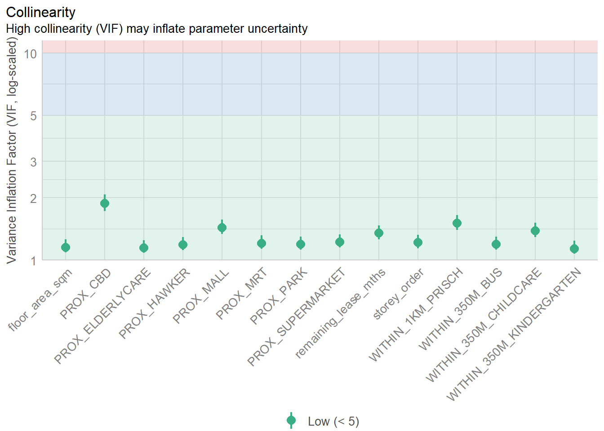
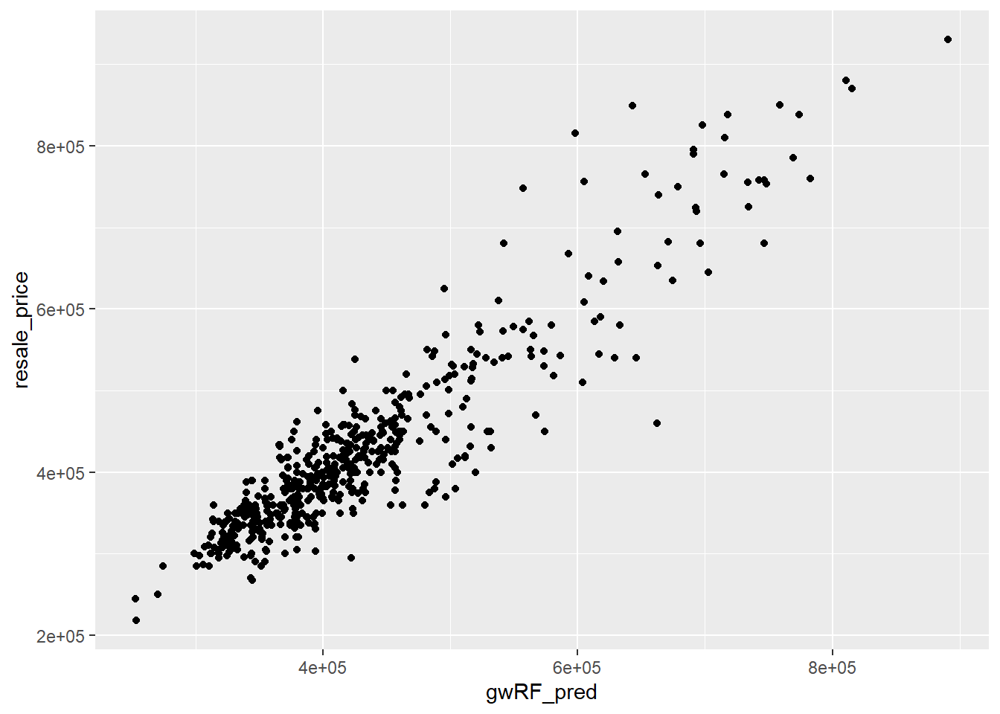

pacman::p_load(sf, spdep, GWmodel, SpatialML, tmap, rsample, Metrics, tidyverse, knitr,kableExtra)In-class Exercise 8: Geographically Weighted Predictive Models
1 Install and Load R Packages
2 Prepare the Data
The below code chunk reads data from rds file and store in mdata as simple feature dataframe.
mdata <- read_rds("data/mdata.rds")Calibrating predictive models can be computationally intensive, especially with methods like random forests. For faster prototyping, a 10% random sample of the data will be selected using the code chunk below.
set.seed(1234)
HDB_sample <- mdata %>%
sample_n(1500)The code chunk below checks if there are overlapping point features.
overlapping_points <- HDB_sample %>%
mutate(overlap = lengths(st_equals(., .)) > 1)The code code chunk below uses st_jitter() of sf package to move the point features by 5m to avoid overlapping point features.
HDB_sample <- HDB_sample %>%
st_jitter(amount = 5)2.1 Data Sampling
The data is split into train and test data sets with with size of 65% and 35% respectively using initial_split() of rsample package. rsample is one of the package from tidymodels.
set.seed(1234)
resale_split <- initial_split(HDB_sample,
prop = 6.5/10,)
train_data <- training(resale_split)
test_data <- testing(resale_split)We write the data to rds format.
write_rds(train_data, "data/train_data.rds")
write_rds(test_data, "data/test_data.rds")Read the data from rds format.
train_data <- read_rds("data/train_data.rds")
test_data <- read_rds("data/test_data.rds")2.2 Multicollinearity Check
It is a good practice to use correlation matrix to examine if there is sign of multicollinearity before loading the predictors into a predictive model.
mdata_nogeo = mdata |>
st_drop_geometry()
ggstatsplot::ggcorrmat(mdata_nogeo[,2:17])
3 Build a non-sptial multiple linear regression
price_mlr <- lm(resale_price ~ floor_area_sqm +
storey_order + remaining_lease_mths +
PROX_CBD + PROX_ELDERLYCARE + PROX_HAWKER +
PROX_MRT + PROX_PARK + PROX_MALL +
PROX_SUPERMARKET + WITHIN_350M_KINDERGARTEN +
WITHIN_350M_CHILDCARE + WITHIN_350M_BUS +
WITHIN_1KM_PRISCH,
data=train_data)
olsrr::ols_regress(price_mlr) Model Summary
--------------------------------------------------------------------------
R 0.860 RMSE 61034.447
R-Squared 0.739 MSE 3783410059.812
Adj. R-Squared 0.735 Coef. Var 14.315
Pred R-Squared 0.730 AIC 24286.358
MAE 46102.421 SBC 24364.477
--------------------------------------------------------------------------
RMSE: Root Mean Square Error
MSE: Mean Square Error
MAE: Mean Absolute Error
AIC: Akaike Information Criteria
SBC: Schwarz Bayesian Criteria
ANOVA
-----------------------------------------------------------------------------
Sum of
Squares DF Mean Square F Sig.
-----------------------------------------------------------------------------
Regression 1.027895e+13 14 7.34211e+11 194.061 0.0000
Residual 3.632074e+12 960 3783410059.812
Total 1.391103e+13 974
-----------------------------------------------------------------------------
Parameter Estimates
------------------------------------------------------------------------------------------------------------------
model Beta Std. Error Std. Beta t Sig lower upper
------------------------------------------------------------------------------------------------------------------
(Intercept) 114172.894 34962.309 3.266 0.001 45561.525 182784.264
floor_area_sqm 2777.543 296.467 0.166 9.369 0.000 2195.745 3359.341
storey_order 12752.368 1088.198 0.213 11.719 0.000 10616.846 14887.890
remaining_lease_mths 349.527 14.910 0.449 23.442 0.000 320.267 378.788
PROX_CBD -16227.901 641.722 -0.572 -25.288 0.000 -17487.240 -14968.562
PROX_ELDERLYCARE -10941.600 3272.302 -0.059 -3.344 0.001 -17363.291 -4519.910
PROX_HAWKER -19593.066 4079.929 -0.086 -4.802 0.000 -27599.675 -11586.457
PROX_MRT -39890.178 5465.548 -0.132 -7.298 0.000 -50615.979 -29164.377
PROX_PARK -15142.071 4697.197 -0.058 -3.224 0.001 -24360.030 -5924.112
PROX_MALL -14453.472 6518.983 -0.044 -2.217 0.027 -27246.573 -1660.371
PROX_SUPERMARKET -17056.095 13703.685 -0.023 -1.245 0.214 -43948.730 9836.540
WITHIN_350M_KINDERGARTEN 8899.141 2066.838 0.076 4.306 0.000 4843.100 12955.183
WITHIN_350M_CHILDCARE -1558.562 1195.890 -0.025 -1.303 0.193 -3905.422 788.297
WITHIN_350M_BUS -540.341 747.336 -0.013 -0.723 0.470 -2006.942 926.261
WITHIN_1KM_PRISCH -10529.555 1579.195 -0.135 -6.668 0.000 -13628.627 -7430.483
------------------------------------------------------------------------------------------------------------------3.1 Multicollinearity check with VIF
3.1.1 VIF Table
vif = performance::check_collinearity(price_mlr)
kable(vif,
caption = "Variance Inflator Factor (VIF) Results") |>
kable_styling(font_size = 10)| Term | VIF | VIF_CI_low | VIF_CI_high | SE_factor | Tolerance | Tolerance_CI_low | Tolerance_CI_high |
|---|---|---|---|---|---|---|---|
| floor_area_sqm | 1.151407 | 1.089081 | 1.257341 | 1.073036 | 0.8685025 | 0.7953289 | 0.9182057 |
| storey_order | 1.214342 | 1.142122 | 1.323261 | 1.101972 | 0.8234911 | 0.7557088 | 0.8755630 |
| remaining_lease_mths | 1.350011 | 1.259448 | 1.472187 | 1.161900 | 0.7407345 | 0.6792616 | 0.7939987 |
| PROX_CBD | 1.881970 | 1.727036 | 2.069921 | 1.371849 | 0.5313581 | 0.4831102 | 0.5790269 |
| PROX_ELDERLYCARE | 1.143973 | 1.082945 | 1.249905 | 1.069567 | 0.8741464 | 0.8000608 | 0.9234082 |
| PROX_HAWKER | 1.185396 | 1.117532 | 1.292447 | 1.088759 | 0.8435996 | 0.7737259 | 0.8948292 |
| PROX_MRT | 1.206165 | 1.135149 | 1.314495 | 1.098255 | 0.8290742 | 0.7607483 | 0.8809413 |
| PROX_PARK | 1.193096 | 1.124046 | 1.300581 | 1.092289 | 0.8381557 | 0.7688872 | 0.8896430 |
| PROX_MALL | 1.436647 | 1.335177 | 1.568835 | 1.198602 | 0.6960652 | 0.6374157 | 0.7489641 |
| PROX_SUPERMARKET | 1.222273 | 1.148901 | 1.331800 | 1.105565 | 0.8181476 | 0.7508635 | 0.8703968 |
| WITHIN_350M_KINDERGARTEN | 1.132339 | 1.073426 | 1.238522 | 1.064114 | 0.8831275 | 0.8074138 | 0.9315967 |
| WITHIN_350M_CHILDCARE | 1.387186 | 1.291898 | 1.513579 | 1.177788 | 0.7208840 | 0.6606856 | 0.7740549 |
| WITHIN_350M_BUS | 1.192068 | 1.123176 | 1.299493 | 1.091819 | 0.8388780 | 0.7695311 | 0.8903325 |
| WITHIN_1KM_PRISCH | 1.510863 | 1.400273 | 1.652008 | 1.229172 | 0.6618734 | 0.6053239 | 0.7141467 |
3.1.2 VIF Plot
plot(vif) +
theme(axis.text.x = element_text(angle = 45, hjust = 1))Variable `Component` is not in your data frame :/
4 Predective Modelling with GWR
4.1 Compute adaptive bandwidth
bw_adaptive <- bw.gwr(resale_price ~ floor_area_sqm +
storey_order + remaining_lease_mths +
PROX_CBD + PROX_ELDERLYCARE + PROX_HAWKER +
PROX_MRT + PROX_PARK + PROX_MALL +
PROX_SUPERMARKET + WITHIN_350M_KINDERGARTEN +
WITHIN_350M_CHILDCARE + WITHIN_350M_BUS +
WITHIN_1KM_PRISCH,
data=train_data,
approach="CV",
kernel="gaussian",
adaptive=TRUE,
longlat=FALSE)Adaptive bandwidth: 610 CV score: 3.396927e+12
Adaptive bandwidth: 385 CV score: 3.174206e+12
Adaptive bandwidth: 245 CV score: 2.869e+12
Adaptive bandwidth: 159 CV score: 2.565794e+12
Adaptive bandwidth: 105 CV score: 2.214738e+12
Adaptive bandwidth: 72 CV score: 1.950172e+12
Adaptive bandwidth: 51 CV score: 1.778792e+12
Adaptive bandwidth: 39 CV score: 1.661084e+12
Adaptive bandwidth: 30 CV score: 1.568725e+12
Adaptive bandwidth: 26 CV score: 1.548313e+12
Adaptive bandwidth: 22 CV score: 1.538462e+12
Adaptive bandwidth: 21 CV score: 1.523028e+12
Adaptive bandwidth: 19 CV score: 1.512568e+12
Adaptive bandwidth: 19 CV score: 1.512568e+12 bw_adaptive[1] 19The result shows that 19 neighbour points is the optimal adaptive bandwidth to be used for this data set.
write_rds(bw_adaptive, "data/bw_adaptive.rds")4.2 Construct the adaptive bandwidth gwr model
First we call the save bandwidth using the code chunk below.
bw_adaptive <- read_rds("data/bw_adaptive.rds")Now, we go ahead to calibrate the gwr-based hedonic pricing model using adaptive bandwidth and Gaussian kernel as shown in the code chunk below.
gwr_adaptive <- gwr.basic(formula = resale_price ~
floor_area_sqm + storey_order +
remaining_lease_mths + PROX_CBD +
PROX_ELDERLYCARE + PROX_HAWKER +
PROX_MRT + PROX_PARK + PROX_MALL +
PROX_SUPERMARKET + WITHIN_350M_KINDERGARTEN +
WITHIN_350M_CHILDCARE + WITHIN_350M_BUS +
WITHIN_1KM_PRISCH,
data=train_data,
bw=bw_adaptive,
kernel = 'gaussian',
adaptive=TRUE,
longlat = FALSE)The model result is as below.
gwr_adaptive ***********************************************************************
* Package GWmodel *
***********************************************************************
Program starts at: 2024-10-31 20:47:02.273628
Call:
gwr.basic(formula = resale_price ~ floor_area_sqm + storey_order +
remaining_lease_mths + PROX_CBD + PROX_ELDERLYCARE + PROX_HAWKER +
PROX_MRT + PROX_PARK + PROX_MALL + PROX_SUPERMARKET + WITHIN_350M_KINDERGARTEN +
WITHIN_350M_CHILDCARE + WITHIN_350M_BUS + WITHIN_1KM_PRISCH,
data = train_data, bw = bw_adaptive, kernel = "gaussian",
adaptive = TRUE, longlat = FALSE)
Dependent (y) variable: resale_price
Independent variables: floor_area_sqm storey_order remaining_lease_mths PROX_CBD PROX_ELDERLYCARE PROX_HAWKER PROX_MRT PROX_PARK PROX_MALL PROX_SUPERMARKET WITHIN_350M_KINDERGARTEN WITHIN_350M_CHILDCARE WITHIN_350M_BUS WITHIN_1KM_PRISCH
Number of data points: 975
***********************************************************************
* Results of Global Regression *
***********************************************************************
Call:
lm(formula = formula, data = data)
Residuals:
Min 1Q Median 3Q Max
-167207 -37824 -238 34255 225584
Coefficients:
Estimate Std. Error t value Pr(>|t|)
(Intercept) 114172.89 34962.31 3.266 0.001131 **
floor_area_sqm 2777.54 296.47 9.369 < 2e-16 ***
storey_order 12752.37 1088.20 11.719 < 2e-16 ***
remaining_lease_mths 349.53 14.91 23.442 < 2e-16 ***
PROX_CBD -16227.90 641.72 -25.288 < 2e-16 ***
PROX_ELDERLYCARE -10941.60 3272.30 -3.344 0.000859 ***
PROX_HAWKER -19593.07 4079.93 -4.802 1.82e-06 ***
PROX_MRT -39890.18 5465.55 -7.298 6.10e-13 ***
PROX_PARK -15142.07 4697.20 -3.224 0.001308 **
PROX_MALL -14453.47 6518.98 -2.217 0.026847 *
PROX_SUPERMARKET -17056.10 13703.69 -1.245 0.213569
WITHIN_350M_KINDERGARTEN 8899.14 2066.84 4.306 1.84e-05 ***
WITHIN_350M_CHILDCARE -1558.56 1195.89 -1.303 0.192796
WITHIN_350M_BUS -540.34 747.34 -0.723 0.469842
WITHIN_1KM_PRISCH -10529.56 1579.19 -6.668 4.38e-11 ***
---Significance stars
Signif. codes: 0 '***' 0.001 '**' 0.01 '*' 0.05 '.' 0.1 ' ' 1
Residual standard error: 61510 on 960 degrees of freedom
Multiple R-squared: 0.7389
Adjusted R-squared: 0.7351
F-statistic: 194.1 on 14 and 960 DF, p-value: < 2.2e-16
***Extra Diagnostic information
Residual sum of squares: 3.632074e+12
Sigma(hat): 61097.14
AIC: 24286.36
AICc: 24286.93
BIC: 23499.6
***********************************************************************
* Results of Geographically Weighted Regression *
***********************************************************************
*********************Model calibration information*********************
Kernel function: gaussian
Adaptive bandwidth: 19 (number of nearest neighbours)
Regression points: the same locations as observations are used.
Distance metric: Euclidean distance metric is used.
****************Summary of GWR coefficient estimates:******************
Min. 1st Qu. Median 3rd Qu.
Intercept -1863475.57 -212514.91 5601.15 245291.24
floor_area_sqm -4400.58 1177.77 2045.27 3344.75
storey_order 3138.23 8074.15 10578.11 13835.86
remaining_lease_mths -567.87 346.52 426.05 503.37
PROX_CBD -81354.37 -23497.13 -10946.60 -1279.01
PROX_ELDERLYCARE -262405.86 -23077.81 -5490.80 17533.13
PROX_HAWKER -225301.62 -36521.56 -10558.54 20145.23
PROX_MRT -305062.32 -90849.20 -55778.06 -20478.31
PROX_PARK -257739.81 -32859.80 -15051.91 8565.74
PROX_MALL -274223.21 -36280.73 3682.06 49856.21
PROX_SUPERMARKET -176209.93 -45157.90 -5420.26 30645.48
WITHIN_350M_KINDERGARTEN -43330.60 -9582.09 -2482.36 5469.75
WITHIN_350M_CHILDCARE -15807.60 -2525.30 1294.72 3234.90
WITHIN_350M_BUS -9134.82 -1825.47 331.29 2176.76
WITHIN_1KM_PRISCH -54170.21 -3571.71 512.00 4646.67
Max.
Intercept 1668279.80
floor_area_sqm 7814.05
storey_order 26308.30
remaining_lease_mths 716.27
PROX_CBD 131063.39
PROX_ELDERLYCARE 179454.03
PROX_HAWKER 146976.72
PROX_MRT 126271.79
PROX_PARK 96580.81
PROX_MALL 342520.41
PROX_SUPERMARKET 177471.19
WITHIN_350M_KINDERGARTEN 40409.87
WITHIN_350M_CHILDCARE 15476.12
WITHIN_350M_BUS 11155.18
WITHIN_1KM_PRISCH 32922.16
************************Diagnostic information*************************
Number of data points: 975
Effective number of parameters (2trace(S) - trace(S'S)): 409.2118
Effective degrees of freedom (n-2trace(S) + trace(S'S)): 565.7882
AICc (GWR book, Fotheringham, et al. 2002, p. 61, eq 2.33): 23520.23
AIC (GWR book, Fotheringham, et al. 2002,GWR p. 96, eq. 4.22): 22826.57
BIC (GWR book, Fotheringham, et al. 2002,GWR p. 61, eq. 2.34): 23824.92
Residual sum of squares: 595314539646
R-square value: 0.9572056
Adjusted R-square value: 0.9261993
***********************************************************************
Program stops at: 2024-10-31 20:47:02.609367 Next the model is saved in rds format for future use.
write_rds(gwr_adaptive, "data/gwr_adaptive.rds")4.3 Retrieve gwr output object
The code chunk below retrieves the save gwr model object.
gwr_adaptive <- read_rds("data/gwr_adaptive.rds")The model output can be displayed using below code.
gwr_adaptive4.4 Predict with Test Data
4.4.1 Test Data bw
gwr_bw_test_adaptive <- bw.gwr(resale_price ~ floor_area_sqm +
storey_order + remaining_lease_mths +
PROX_CBD + PROX_ELDERLYCARE + PROX_HAWKER +
PROX_MRT + PROX_PARK + PROX_MALL +
PROX_SUPERMARKET + WITHIN_350M_KINDERGARTEN +
WITHIN_350M_CHILDCARE + WITHIN_350M_BUS +
WITHIN_1KM_PRISCH,
data=test_data,
approach="CV",
kernel="gaussian",
adaptive=TRUE,
longlat=FALSE)Adaptive bandwidth: 332 CV score: 1.808831e+12
Adaptive bandwidth: 213 CV score: 1.680658e+12
Adaptive bandwidth: 139 CV score: 1.487342e+12
Adaptive bandwidth: 93 CV score: 1.327673e+12
Adaptive bandwidth: 65 CV score: 1.150371e+12
Adaptive bandwidth: 47 CV score: 1.023446e+12
Adaptive bandwidth: 36 CV score: 901695754647
Adaptive bandwidth: 29 CV score: 869852523865
Adaptive bandwidth: 25 CV score: 863464583366
Adaptive bandwidth: 22 CV score: 855145692336
Adaptive bandwidth: 20 CV score: 8.39443e+11
Adaptive bandwidth: 19 CV score: 8.35764e+11
Adaptive bandwidth: 18 CV score: 837955316896
Adaptive bandwidth: 19 CV score: 8.35764e+11 4.4.2 Predict with test data
gwr_pred <- gwr.predict(formula = resale_price ~
floor_area_sqm + storey_order +
remaining_lease_mths + PROX_CBD +
PROX_ELDERLYCARE + PROX_HAWKER +
PROX_MRT + PROX_PARK + PROX_MALL +
PROX_SUPERMARKET + WITHIN_350M_KINDERGARTEN +
WITHIN_350M_CHILDCARE + WITHIN_350M_BUS +
WITHIN_1KM_PRISCH,
data=train_data,
predictdata = test_data,
bw=bw_adaptive,
kernel = 'gaussian',
adaptive=TRUE,
longlat = FALSE)5 Predictive Modelling: SpatialML methods
5.1 Prepare Coordinates data
The code chunk below extracts the x,y coordinates of the full, training and test data sets.
coords <- st_coordinates(mdata)
coords_train <- st_coordinates(train_data)
coords_test <- st_coordinates(test_data)We write all the output into rds for future use.
coords_train <- write_rds(coords_train, "data/coords_train.rds" )
coords_test <- write_rds(coords_test, "data/coords_test.rds" )5.2 Drop Geometry field
First, we drop the geometry column of the sf data.frame using st_drop_geometry() of sf package as ranger() function require tible dataframe.
train_data_nogeom <- train_data %>%
st_drop_geometry()5.3 Calibrate Random Forest model
We calibrate a model to predict HDB resale price using random forest function of ranger package.
set.seed(1234)
rf <- ranger(resale_price ~ floor_area_sqm + storey_order +
remaining_lease_mths + PROX_CBD + PROX_ELDERLYCARE +
PROX_HAWKER + PROX_MRT + PROX_PARK + PROX_MALL +
PROX_SUPERMARKET + WITHIN_350M_KINDERGARTEN +
WITHIN_350M_CHILDCARE + WITHIN_350M_BUS +
WITHIN_1KM_PRISCH,
data=train_data_nogeom)Model output
rfRanger result
Call:
ranger(resale_price ~ floor_area_sqm + storey_order + remaining_lease_mths + PROX_CBD + PROX_ELDERLYCARE + PROX_HAWKER + PROX_MRT + PROX_PARK + PROX_MALL + PROX_SUPERMARKET + WITHIN_350M_KINDERGARTEN + WITHIN_350M_CHILDCARE + WITHIN_350M_BUS + WITHIN_1KM_PRISCH, data = train_data_nogeom)
Type: Regression
Number of trees: 500
Sample size: 975
Number of independent variables: 14
Mtry: 3
Target node size: 5
Variable importance mode: none
Splitrule: variance
OOB prediction error (MSE): 2313484641
R squared (OOB): 0.8380181 write_rds(rf, "data/rf.rds")rf <- read_rds("data/rf.rds")5.4 Calibrate with grf()
In this section, we explore how to calibrate a model to predict HDB resale price by using grf() of SpatialML package.
set.seed(1234)
gwRF_adaptive <- grf(formula = resale_price ~ floor_area_sqm + storey_order +
remaining_lease_mths + PROX_CBD + PROX_ELDERLYCARE +
PROX_HAWKER + PROX_MRT + PROX_PARK + PROX_MALL +
PROX_SUPERMARKET + WITHIN_350M_KINDERGARTEN +
WITHIN_350M_CHILDCARE + WITHIN_350M_BUS +
WITHIN_1KM_PRISCH,
dframe=train_data_nogeom,
bw=55,
kernel="adaptive",
coords=coords_train)
Number of Observations: 975Number of Independent Variables: 14Kernel: Adaptive
Neightbours: 55
--------------- Global ML Model Summary ---------------Ranger result
Call:
ranger(resale_price ~ floor_area_sqm + storey_order + remaining_lease_mths + PROX_CBD + PROX_ELDERLYCARE + PROX_HAWKER + PROX_MRT + PROX_PARK + PROX_MALL + PROX_SUPERMARKET + WITHIN_350M_KINDERGARTEN + WITHIN_350M_CHILDCARE + WITHIN_350M_BUS + WITHIN_1KM_PRISCH, data = train_data_nogeom, num.trees = 500, mtry = 4, importance = "impurity", num.threads = NULL)
Type: Regression
Number of trees: 500
Sample size: 975
Number of independent variables: 14
Mtry: 4
Target node size: 5
Variable importance mode: impurity
Splitrule: variance
OOB prediction error (MSE): 2112956167
R squared (OOB): 0.8520584
Importance: floor_area_sqm storey_order remaining_lease_mths
7.014621e+11 1.472727e+12 2.368021e+12
PROX_CBD PROX_ELDERLYCARE PROX_HAWKER
4.516177e+12 5.035574e+11 6.351735e+11
PROX_MRT PROX_PARK PROX_MALL
7.926518e+11 5.292538e+11 4.432979e+11
PROX_SUPERMARKET WITHIN_350M_KINDERGARTEN WITHIN_350M_CHILDCARE
3.705109e+11 1.128608e+11 2.219549e+11
WITHIN_350M_BUS WITHIN_1KM_PRISCH
2.189088e+11 7.361648e+11
Mean Square Error (Not OOB): 404387373.973R-squared (Not OOB) %: 97.166AIC (Not OOB): 19352.437AICc (Not OOB): 19352.937
--------------- Local Model Summary ---------------
Residuals OOB: Min. 1st Qu. Median Mean 3rd Qu. Max.
-244730.6 -21894.3 -1486.0 -147.8 20203.9 272305.6
Residuals Predicted (Not OOB): Min. 1st Qu. Median Mean 3rd Qu. Max.
-39989.0 -3523.0 -235.4 -115.9 2820.4 49785.4
Local Variable Importance: Min Max Mean StD
floor_area_sqm 696919686 171359696724 24585231938 31054898436
storey_order 556286378 336284813866 29111637645 53940346777
remaining_lease_mths 5015621769 662431581470 102796953916 142322738014
PROX_CBD 969645111 333574144319 32398603460 51529843423
PROX_ELDERLYCARE 1885669191 133808777431 23022318538 24756166362
PROX_HAWKER 1054538821 197323237741 21225513496 25502913522
PROX_MRT 1230399011 268171063212 28859762449 46296774533
PROX_PARK 1001025148 178811098249 19686271129 20914300056
PROX_MALL 1463394653 260061426721 27018175100 39644748521
PROX_SUPERMARKET 919432669 168565348890 19481442490 27618922136
WITHIN_350M_KINDERGARTEN 190947575 43671284878 5500713976 6598985175
WITHIN_350M_CHILDCARE 386573451 178795505651 19080750625 34710094711
WITHIN_350M_BUS 641999519 139202195056 8908180301 11083301899
WITHIN_1KM_PRISCH 232944521 62733693084 6845346956 8828863011
Mean squared error (OOB): 2109345256.436R-squared (OOB) %: 85.216AIC (OOB): 20962.902AICc (OOB): 20963.403Mean squared error Predicted (Not OOB): 52672246.874R-squared Predicted (Not OOB) %: 99.631AIC Predicted (Not OOB): 17365.109AICc Predicted (Not OOB): 17365.61
Calculation time (in seconds): 29.6244The model output is saved into rds format using the below code chunk.
write_rds(gwRF_adaptive, "data/gwRF_adaptive.rds")The below code chunk retrieves the saved model.
gwRF_adaptive <- read_rds("data/gwRF_adaptive.rds")5.5 Predict using the test data
5.5.1 Prepare the test data
The code chunk combines the test data with its corresponding coordinates data.
test_data_nogeom <- cbind(test_data, coords_test) %>%
st_drop_geometry()5.5.2 Predict with the test data
Next, predict.grf() of spatialML package is used to predict the resale value using the test data and gwRF_adaptive model calibrated earlier.
gwRF_pred <- predict.grf(gwRF_adaptive,
test_data_nogeom,
x.var.name="X",
y.var.name="Y",
local.w=1,
global.w=0)5.5.3 Convert the predicting output into a data frame
The output of the predict.grf() is a vector of predicted values. It is more efficient to convert it into a data frame for further visualisation and analysis.
GRF_pred_df <- as.data.frame(gwRF_pred)Next cbind() is used to append the predicted values onto test_data.
test_data_pred <- cbind(test_data,
GRF_pred_df)5.6 Visualiza the predicted values
ggplot(data = test_data_pred,
aes(x = gwRF_pred,
y = resale_price)) +
geom_point()